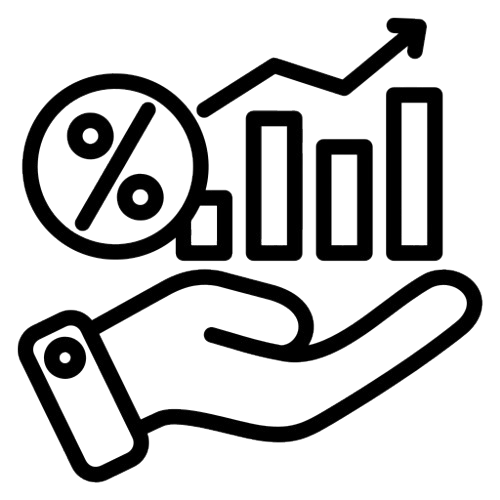
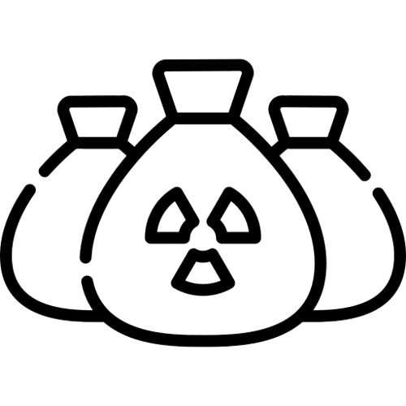

Our Challenges
Home Our Challenges
Our Challenges
Our Challenges
If You Operate in Agriculture Today, You Face Structural Challenges
Unstable & Costly Labor
Agricultural labor remains unstable, often untrained, and
expensive to manage. This directly impacts productivity,
operational efficiency, and long-term sustainability across
farms and agribusinesses.
Traceability & Certification Barriers
Global and export markets increasingly demand full
traceability and certified production processes. Many
agricultural operations struggle to meet compliance
standards, limiting their access to high-value markets.

Inconsistent Yields
Crop yields often fluctuate based on human decisions rather
than data-driven systems. The lack of automation and smart
monitoring leads to inefficiencies, higher risks, and
unpredictable outcomes.

Agricultural Waste & Residues
Over 30 million tons of agricultural residues are wasted or
burned every year, causing environmental damage and missed
opportunities for renewable energy, recycling, and value
creation.

Fragmented Vendors & Accountability
Agricultural ecosystems rely on multiple disconnected
vendors, resulting in fragmented accountability, operational
gaps, and reduced transparency across the value chain.